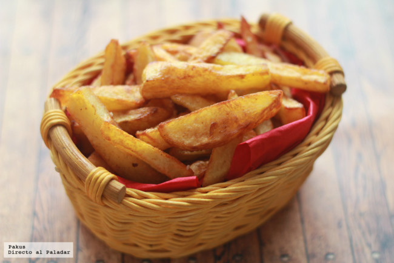

Como hacer las mejores Papas Fritas

Ingredientes
- Papas
- Aceite
- Sal y Pimienta a gusto
- Ketchup
Elaboracion
- Precalentar una olla con abundante aceite.
- Lavar bien y pelar las papas.
- Cortarlas en bastones de 2cm aprox.
- Dejarlas reposar en agua fria por 5 min.
- Escurrirlas y Secarlas con papel absorvente.
- Cocinarlas en el aceite hasta que tomen un color doradito.
- Servir y poner sal y pimienta a gusto mientras esten calientes.